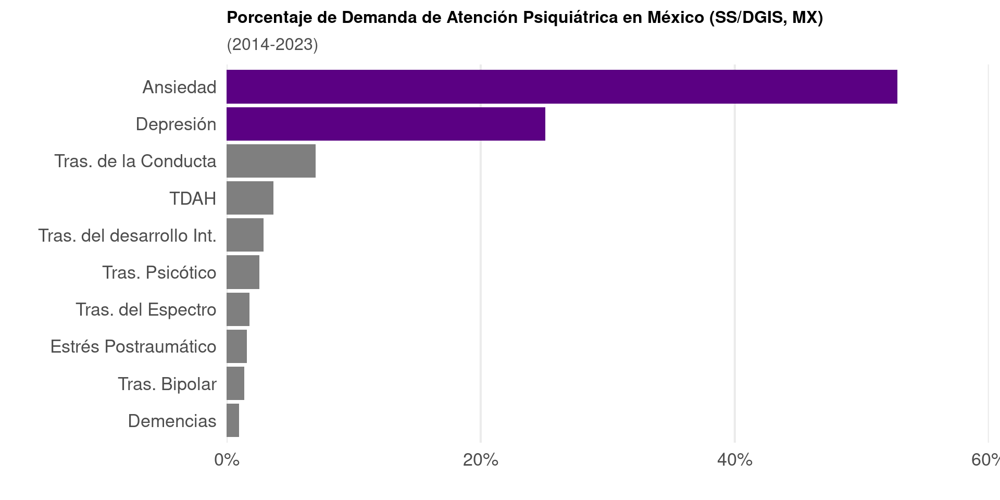

Tesis
Biól. Garcia Rios Santiago
UNAM, Facultad de Ciencias, MAESTRÍA en Ciencias Biológicas
Director de Tesis: Dr. Alonso Martínez Canabal
Trastornos de Ansiedad y Depresión

Efectos cognitivos de la depresión y ansiedad
Estos trastornos afectan cómo aprendemos, recordamos, planificamos y regulamos nuestras conductas para alcanzar metas (Girotti et al., 2024, Neurobiology of Stress)
Flexibilidad Cognitiva: Habilidad mental que permite adaptar pensamientos y conductas en respuesta a las contingencias ambientales cambiantes (Uddin, 2021, Nat Rev Neurosci)
La flexibilidad cognitiva surge de la interacción de múltiples redes neuronales que permiten ajustar los pensamientos y conductas ante cambios en el entorno
Hipocampo
Anatomía y Función

Estudios Fundacionales de su Función
Memoria Episódica
Emoción
Mapas Cognitivos
Consolidación y Valencia
1. Memoria de miedo contextual
2. Amígdala procesa la valencia y la Corteza Entorrinal el contexto (Roesler et al., 2021, Neurobiol Learn Mem)
3. Hipocampo-Amígdala-mPFC
4. El estrés puede promover los hábitos (Cuerpo Estriado) y quitarle agencia al individuo
HIP-Estrés y Flexibilidad Cognitiva
Fármacos antidepresivos: Inhibidores Selectivos de la Recaptura de Serotonina (ISRS)
La fluoxetina puede mejorar síntomas emocionales en trastornos de depresión y ansiedad, así como prevenir la pérdida de volumen en el hipocampo causada por el estrés (Dulawa et al., 2004, Neuropsychopharmacol; Marwari & Dawe, 2018, J Psychopharmacol)
No está claro si este efecto protector se traduce en una mejora de la retención o actualización de una memoria espacial (Bessa et al., 2009, Mol Psychiatr; David et al., 2009; Holick et al., 2008, Neuropsychopharmacol; Jett et al., 2017, Neuroscience; Liang et al., 2022, Experimental Neurology; Musaelyan et al., 2023, Dev Neurosci-Basel)
Objetivos
General: Evaluar el impacto de la fluoxetina en la memoria espacial de ratones sometidos a estrés crónico moderado impredecible.
Hipótesis
Hipótesis
Si la fluoxetina puede aliviar los efectos emocionales negativos del estrés crónico, entonces podrá aliviar las modificaciones sobre la memoria remota espacial y la flexibilidad cognitiva.
Material y Métodos

- ANOVA de medidas repetidas (diseño mixto): Factores entre sujetos (Tratamiento: Salina/Fluoxetina; Estrés: Sin/CUMS) y dentro de sujetos (tiempo, cuadrante/zona). Corrección Greenhouse–Geisser y comparaciones post hoc (Holm-Bonferroni).
- Modelos lineales mixtos: interacción prueba × tratamiento × estrés
- Regresión de Poisson de efectos mixtos: frecuencia de estrategias según tratamiento, estrés y tiempo.
Nivel de significancia: \(p < 0.05\), tamaños de efecto con η².
Resultados
Desarrollo de aplicaciones para el analisis de datos
Discusión
Efecto del estrés
El estrés crónico afecta negativamente la función cognitiva dependiente del hipocampo (Belleau et al., 2019, Biol Psychiat), disminuyendo la Neurogénesis en esta zona y causando atrofia dendrítica (De Alcubierre et al., 2023, J Endocrinol Invest; Kino, 2015, Front. Physiol.).
Mecanismos involucrados:


Efecto del tratamiento con Fluoxetina
La fluoxetina facilitó el reaprendizaje en el laberinto acuático
Posibles mecanismos:


Contribuciones para el análisisis de datos
Utilizar métricas más sensibles a la función hipocampal y la flexibilidad cognitiva (distancia media, entropía, estrategias de búsqueda) (Garthe & Kempermann, 2013, Frontiers in Neuroscience; Hernández-Mercado & Zepeda, 2022, Frontiers in Neuroscience; Maei, Zaslavsky, Wang, et al., 2009, Front Integr Neurosci).
Se utilizó una nueva regresión de Poisson para modelar estrategias (egocéntricas, alocéntricas y perseverantes), ofreciendo un análisis más detallado que los enfoques tradicionales (Amelchenko et al., 2023, J Neurosci).
Referencias Extras
Antidepresivos y el Ambiente
The double-edged sword of neural plasticity
Branchi (2011, Psychoneuroendocrino) y Branchi (2022, Neurosci Biobehav R)
- Los niveles altos de plasticidad inducidos por medicamentos, como los antidepresivos serotoninérgicos y los psicodélicos, no son beneficiosos por sí mismos.
- Una alta plasticidad hace que el cerebro y el comportamiento sean más susceptibles a cambios según factores contextuales, como las condiciones de vida.
Plasticidad Inducida y Demaduración de Neuronas por Antidepresivos
- iPlasticity: Induced juvenile-like plasticity in the adult brain as a mechanism of antidepressants (Umemori et al., 2018, Psychiat Clin Neuros)
- Fluoxetine-induced dematuration of hippocampal neurons and adult cortical neurogenesis in the common marmoset (Ohira et al., 2019, Molecular Brain)
- Reversal of hippocampal neuronal maturation by serotonergic antidepressants (Kobayashi et al., 2010, Proceedings of the National Academy of Sciences)

Fin
Literatura Citada
Alenina, N., & Klempin, F. (2015). The Role of Serotonin in Adult Hippocampal Neurogenesis. Behavioural Brain Research, 277, 49-57. https://doi.org/10.1016/j.bbr.2014.07.038
Alvarez, P., & Squire, L. R. (1994). Memory Consolidation and the Medial Temporal Lobe: A Simple Network Model. Proceedings of the National Academy of Sciences of the United States of America, 91(15), 7041-7045. https://doi.org/10.1073/pnas.91.15.7041
Amelchenko, E. M., Bezriadnov, D. V., Chekhov, O. A., Anokhin, K. V., Lazutkin, A. A., & Enikolopov, G. (2023). Age-Related Decline in Cognitive Flexibility Is Associated with the Levels of Hippocampal Neurogenesis. Frontiers in Neuroscience, 17. https://doi.org/10.3389/fnins.2023.1232670
Amelchenko, E. M., Bezriadnov, D. V., Chekhov, O. A., Ivanova, A. A., Kedrov, A. V., Anokhin, K. V., Lazutkin, A. A., & Enikolopov, G. (2023). Cognitive Flexibility Is Selectively Impaired by Radiation and Is Associated with Differential Recruitment of Adult-Born Neurons. Journal of Neuroscience, 43(34), 6061-6083. https://doi.org/10.1523/JNEUROSCI.0161-22.2023
Anacker, C., & Hen, R. (2017). Adult Hippocampal Neurogenesis and Cognitive Flexibility — Linking Memory and Mood. Nature reviews. Neuroscience, 18(6), 335-346. https://doi.org/10.1038/nrn.2017.45
Belleau, E. L., Treadway, M. T., & Pizzagalli, D. A. (2019). The Impact of Stress and Major Depressive Disorder on Hippocampal and Medial Prefrontal Cortex Morphology. Biological Psychiatry, 85(6), 443-453. https://doi.org/10.1016/j.biopsych.2018.09.031
Bessa, J. M., Ferreira, D., Melo, I., Marques, F., Cerqueira, J. J., Palha, J. A., Almeida, O. F. X., & Sousa, N. (2009). The Mood-Improving Actions of Antidepressants Do Not Depend on Neurogenesis but Are Associated with Neuronal Remodeling. Molecular Psychiatry, 14(8), 764-773, 739. https://doi.org/10.1038/mp.2008.119
Block, A. E. (2007). Costs and Benefits of Direct-to-Consumer Advertising: The Case of Depression. PharmacoEconomics, 25(6), 511-521. https://doi.org/10.2165/00019053-200725060-00006
Branchi, I. (2011). The Double Edged Sword of Neural Plasticity: Increasing Serotonin Levels Leads to Both Greater Vulnerability to Depression and Improved Capacity to Recover. Psychoneuroendocrinology, 36(3), 339-351. https://doi.org/10.1016/j.psyneuen.2010.08.011
Branchi, I. (2022). Recentering Neuroscience on Behavior: The Interface between Brain and Environment Is a Privileged Level of Control of Neural Activity. Neuroscience & Biobehavioral Reviews, 138, 104678. https://doi.org/10.1016/j.neubiorev.2022.104678
Chen, Y., Zhang, H., Cameron, M., & Sejnowski, T. (2024). Predictive Sequence Learning in the Hippocampal Formation. Neuron, 0(0). https://doi.org/10.1016/j.neuron.2024.05.024
Cobb, J. A., Simpson, J., Mahajan, G. J., Overholser, J. C., Jurjus, G. J., Dieter, L., Herbst, N., May, W., Rajkowska, G., & Stockmeier, C. A. (2013). Hippocampal Volume and Total Cell Numbers in Major Depressive Disorder. Journal of psychiatric research, 47(3), 299-306. https://doi.org/10.1016/j.jpsychires.2012.10.020
Cooke, M. B., O’Leary, T. P., Harris, P., Ma, R., Brown, R. E., & Snyder, J. S. (2020). Pathfinder: Open Source Software for Analyzing Spatial Navigation Search Strategies. F1000Research, 8, 1521. https://doi.org/10.12688/f1000research.20352.2
Corder, K. M., Hoffman, J. M., Sogorovic, A., & Austad, S. N. (2023). Behavioral Comparison of the C57BL/6 Inbred Mouse Strain and Their CB6F1 Siblings. Behavioural Processes, 207, 104836. https://doi.org/10.1016/j.beproc.2023.104836
Dajani, D. R., & Uddin, L. Q. (2015). Demystifying Cognitive Flexibility: Implications for Clinical and Developmental Neuroscience. Trends in Neurosciences, 38(9), 571. https://doi.org/10.1016/j.tins.2015.07.003
David, D. J., Samuels, B. A., Rainer, Q., Wang, J., Marsteller, D. A., Mendez, I., Drew, M. G. B., Craig, D. A., Guiard, B. P., Guilloux, J.-P., Artymyshyn, R., Gardier, A. M., Gerald, C. P. G., Antonijevic, I. A., Dranovsky, A., & Hen, R. (2009). Neurogenesis-Dependent and -Independent Effects of Fluoxetine in an Animal Model of Anxiety/Depression. https://doi.org/10.1016/J.NEURON.2009.04.017
De Alcubierre, D., Ferrari, D., Mauro, G., Isidori, A. M., Tomlinson, J. W., & Pofi, R. (2023). Glucocorticoids and Cognitive Function: A Walkthrough in Endogenous and Exogenous Alterations. Journal of Endocrinological Investigation, 46(10), 1961-1982. https://doi.org/10.1007/s40618-023-02091-7
Drude, S., Geissler, A., Olfe, J., Starke, A., Domanska, G., Schuett, C., & Kiank-Nussbaum, C. (2011). Side Effects of Control Treatment Can Conceal Experimental Data When Studying Stress Responses to Injection and Psychological Stress in Mice. Lab Animal, 40(4), 119-128. https://doi.org/10.1038/laban0411-119
Du Preez, A., Law, T., Onorato, D., Lim, Y. M., Eiben, P., Musaelyan, K., Egeland, M., Hye, A., Zunszain, P. A., Thuret, S., Pariante, C. M., & Fernandes, C. (2020). The Type of Stress Matters: Repeated Injection and Permanent Social Isolation Stress in Male Mice Have a Differential Effect on Anxiety- and Depressive-like Behaviours, and Associated Biological Alterations. Translational Psychiatry, 10(1), 1-17. https://doi.org/10.1038/s41398-020-01000-3
Dulawa, S. C., Holick, K. A., Gundersen, B., & Hen, R. (2004). Effects of Chronic Fluoxetine in Animal Models of Anxiety and Depression. Neuropsychopharmacology, 29(7, 7), 1321-1330. https://doi.org/10.1038/sj.npp.1300433
Eichenbaum, H., Dudchenko, P., Wood, E., Shapiro, M., & Tanila, H. (1999). The Hippocampus, Memory, and Place Cells: Is It Spatial Memory or a Memory Space? Neuron, 23(2), 209-226. https://doi.org/10.1016/S0896-6273(00)80773-4
Garthe, A., Behr, J., & Kempermann, G. (2009). Adult-Generated Hippocampal Neurons Allow the Flexible Use of Spatially Precise Learning Strategies. PLOS ONE, 4(5), e5464. https://doi.org/10.1371/journal.pone.0005464
Garthe, A., & Kempermann, G. (2013). An Old Test for New Neurons: Refining the Morris Water Maze to Study the Functional Relevance of Adult Hippocampal Neurogenesis. Frontiers in Neuroscience, 7, 1-11. https://doi.org/10.3389/fnins.2013.00063
Garthe, A., Roeder, I., & Kempermann, G. (2016). Mice in an Enriched Environment Learn More Flexibly Because of Adult Hippocampal Neurogenesis. Hippocampus, 26(2), 261-271. https://doi.org/10.1002/hipo.22520
Giovanniello, J. R., Paredes, N., Wiener, A., Ramírez-Armenta, K., Oragwam, C., Uwadia, H. O., Yu, A. L., Lim, K., Pimenta, J. S., Vilchez, G. E., Nnamdi, G., Wang, A., Sehgal, M., Reis, F. M., Sias, A. C., Silva, A. J., Adhikari, A., Malvaez, M., & Wassum, K. M. (2025). A Dual-Pathway Architecture for Stress to Disrupt Agency and Promote Habit. Nature, 640(8059), 722-731. https://doi.org/10.1038/s41586-024-08580-w
Girotti, M., Bulin, S. E., & Carreno, F. R. (2024). Effects of Chronic Stress on Cognitive Function – From Neurobiology to Intervention. Neurobiology of Stress, 33, 100670. https://doi.org/10.1016/j.ynstr.2024.100670
Goto, A. (2022). Synaptic Plasticity during Systems Memory Consolidation. Neuroscience Research, 183, 1-6. https://doi.org/10.1016/j.neures.2022.05.008
Goto, A., Bota, A., Miya, K., Wang, J., Tsukamoto, S., Jiang, X., Hirai, D., Murayama, M., Matsuda, T., McHugh, T. J., Nagai, T., & Hayashi, Y. (2021). Stepwise Synaptic Plasticity Events Drive the Early Phase of Memory Consolidation. Science, 374(6569), 857-863. https://doi.org/10.1126/science.abj9195
Grech, A. M., Nakamura, J. P., Hill, R. A., Grech, A. M., Nakamura, J. P., & Hill, R. A. (2018). The Importance of Distinguishing Allocentric and Egocentric Search Strategies in Rodent Hippocampal-Dependent Spatial Memory Paradigms: Getting More Out of Your Data. En The Hippocampus - Plasticity and Functions. IntechOpen. https://doi.org/10.5772/intechopen.76603
Hernández-Mercado, K., & Zepeda, A. (2022). Morris Water Maze and Contextual Fear Conditioning Tasks to Evaluate Cognitive Functions Associated With Adult Hippocampal Neurogenesis. Frontiers in Neuroscience, 15, 1-16. https://doi.org/10.3389/fnins.2021.782947
Holick, K. A., Lee, D. C., Hen, R., & Dulawa, S. C. (2008). Behavioral Effects of Chronic Fluoxetine in BALB/cJ Mice Do Not Require Adult Hippocampal Neurogenesis or the Serotonin 1A Receptor. Neuropsychopharmacology, 33(2, 2), 406-417. https://doi.org/10.1038/sj.npp.1301399
Hornung, J.-P. (2003). The Human Raphe Nuclei and the Serotonergic System. Journal of Chemical Neuroanatomy, 26(4), 331-343. https://doi.org/10.1016/j.jchemneu.2003.10.002
Huang, Y., Coupland, N. J., Lebel, R. M., Carter, R., Seres, P., Wilman, A. H., & Malykhin, N. V. (2013). Structural Changes in Hippocampal Subfields in Major Depressive Disorder: A High-Field Magnetic Resonance Imaging Study. Biological Psychiatry, 74(1), 62-68. https://doi.org/10.1016/j.biopsych.2013.01.005
Jett, J. D., Bulin, S. E., Hatherall, L. C., McCartney, C. M., & Morilak, D. A. (2017). Deficits in Cognitive Flexibility Induced by Chronic Unpredictable Stress Are Associated with Impaired Glutamate Neurotransmission in the Rat Medial Prefrontal Cortex. Neuroscience, 346(3), 284-297. https://doi.org/10.1016/j.neuroscience.2017.01.017
Kempermann, G., Gage, F. H., Aigner, L., Song, H., Curtis, M. A., Thuret, S., Kuhn, H. G., Jessberger, S., Frankland, P. W., Cameron, H. A., Gould, E., Hen, R., Abrous, D. N., Toni, N., Schinder, A. F., Zhao, X., Lucassen, P. J., & Frisén, J. (2018). Human Adult Neurogenesis: Evidence and Remaining Questions. Cell Stem Cell, 23(1), 25-30. https://doi.org/10.1016/j.stem.2018.04.004
Kesner, R. P. (2007). Behavioral Functions of the CA3 Subregion of the Hippocampus. Learning & Memory, 14(11), 771-781. https://doi.org/10.1101/lm.688207
Kino, T. (2015). Stress, Glucocorticoid Hormones, and Hippocampal Neural Progenitor Cells: Implications to Mood Disorders. Frontiers in Physiology, 6. https://doi.org/10.3389/fphys.2015.00230
Kitamura, T., Ogawa, S. K., Roy, D. S., Okuyama, T., Morrissey, M. D., Smith, L. M., Redondo, R. L., & Tonegawa, S. (2017). Engrams and Circuits Crucial for Systems Consolidation of a Memory. Science (New York, N.Y.), 356(6333), 73-78. https://doi.org/10.1126/science.aam6808
Klüver, H., & Bucy, P. C. (1939). Preliminary Analysis of Functions of the Temporal Lobes in Monkeys. Archives of Neurology & Psychiatry, 42, 979-1000. https://doi.org/10.1001/archneurpsyc.1939.02270240017001
Kobayashi, K., Ikeda, Y., Sakai, A., Yamasaki, N., Haneda, E., Miyakawa, T., & Suzuki, H. (2010). Reversal of Hippocampal Neuronal Maturation by Serotonergic Antidepressants. Proceedings of the National Academy of Sciences, 107(18), 8434-8439. https://doi.org/10.1073/pnas.0912690107
Levinson, S., Miller, M., Iftekhar, A., Justo, M., Arriola, D., Wei, W., Hazany, S., Avecillas-Chasin, J. M., Kuhn, T. P., Horn, A., & Bari, A. A. (2023). A Structural Connectivity Atlas of Limbic Brainstem Nuclei. Frontiers in Neuroimaging, 1. https://doi.org/10.3389/fnimg.2022.1009399
Liang, X., Tang, J., Qi, Y. qiang, Luo, Y. min, Yang, C. mao, Dou, X. yun, Jiang, L., Xiao, Q., Zhang, L., Chao, F. lei, Zhou, C. ni, & Tang, Y. (2022). Exercise More Efficiently Regulates the Maturation of Newborn Neurons and Synaptic Plasticity than Fluoxetine in a CUS-induced Depression Mouse Model. Experimental Neurology, 354, 114103. https://doi.org/10.1016/j.expneurol.2022.114103
Lods, M., Pacary, E., Mazier, W., Farrugia, F., Mortessagne, P., Masachs, N., Charrier, V., Massa, F., Cota, D., Ferreira, G., Abrous, D. N., & Tronel, S. (2021). Adult-Born Neurons Immature during Learning Are Necessary for Remote Memory Reconsolidation in Rats. Nature Communications, 12(1), 1778. https://doi.org/10.1038/s41467-021-22069-4
Lupien, S. J., McEwen, B. S., Gunnar, M. R., & Heim, C. (2009). Effects of Stress throughout the Lifespan on the Brain, Behaviour and Cognition. Nature Reviews Neuroscience, 10(6, 6), 434-445. https://doi.org/10.1038/nrn2639
Maei, H. R., Zaslavsky, K., Teixeira, C. M., & Frankland, P. W. (2009). What Is the Most Sensitive Measure of Water Maze Probe Test Performance? Frontiers in Integrative Neuroscience, 3, 4. https://doi.org/10.3389/neuro.07.004.2009
Maei, H. R., Zaslavsky, K., Wang, A. H., Yiu, A. P., Teixeira, C. M., Josselyn, S. A., & Frankland, P. W. (2009). Development and Validation of a Sensitive Entropy-Based Measure for the Water Maze. Frontiers in Integrative Neuroscience, 3, 33. https://doi.org/10.3389/neuro.07.033.2009
Maramis, M. M., Mahajudin, M. S., & Khotib, J. (2021). Impaired Cognitive Flexibility and Working Memory Precedes Depression: A Rat Model to Study Depression. Research Article Neuropsychobiology, 80, 225-233. https://doi.org/10.1159/000508682
Marwari, S., & Dawe, G. S. (2018). (R)-Fluoxetine Enhances Cognitive Flexibility and Hippocampal Cell Proliferation in Mice. Journal of Psychopharmacology (Oxford, England), 32(4), 441-457. https://doi.org/10.1177/0269881118754733
Monteiro, S., Roque, S., de Sá-Calçada, D., Sousa, N., Correia-Neves, M., & Cerqueira, J. J. (2015). An Efficient Chronic Unpredictable Stress Protocol to Induce Stress-Related Responses in C57BL/6 Mice. Frontiers in Psychiatry, 6, 1-11. https://doi.org/10.3389/fpsyt.2015.00006
Morris, R. G. M., Garrud, P., Rawlins, J. N. P., & O’Keefe, J. (1982). Place Navigation Impaired in Rats with Hippocampal Lesions. Nature, 297(5868), 681-683. https://doi.org/10.1038/297681a0
Musaelyan, K., Horowitz, M. A., McHugh, S., & Szele, F. G. (2023). Fluoxetine Can Cause Epileptogenesis and Aberrant Neurogenesis in Male Wild Type Mice. Developmental Neuroscience. https://doi.org/10.1159/000531478
O’Keefe, J., & Nadel, L. (1979). Précis of O’Keefe and Nadel’s The Hippocampus as a Cognitive Map. Behavioral and Brain Sciences, 2(4), 487-533. https://doi.org/10.1017/S0140525X00063949
Ohira, K., Hagihara, H., Miwa, M., Nakamura, K., & Miyakawa, T. (2019). Fluoxetine-Induced Dematuration of Hippocampal Neurons and Adult Cortical Neurogenesis in the Common Marmoset. Molecular Brain, 12(1), 69. https://doi.org/10.1186/s13041-019-0489-5
Olpe, C., & Jessberger, S. (2023). Cell Population Dynamics in the Course of Adult Hippocampal Neurogenesis: Remaining Unknowns. Hippocampus, 33(4), 402-411. https://doi.org/10.1002/hipo.23475
Overall, R. W., Zocher, S., Garthe, A., & Kempermann, G. (2020, febrero 27). Rtrack: A Software Package for Reproducible Automated Water Maze Analysis. https://doi.org/10.1101/2020.02.27.967372
Palumbo, M. L., Zubilete, M. A. Z., Cremaschi, G. A., & Genaro, A. M. (2009). Different Effect of Chronic Stress on Learning and Memory in BALB/c and C57BL/6 Inbred Mice: Involvement of Hippocampal NO Production and PKC Activity. Stress. https://doi.org/10.1080/10253890802506383
Roesler, R., Parent, M. B., LaLumiere, R. T., & McIntyre, C. K. (2021). Amygdala-Hippocampal Interactions in Synaptic Plasticity and Memory Formation. Neurobiology of Learning and Memory, 184, 107490. https://doi.org/10.1016/j.nlm.2021.107490
Ross, R. A., Foster, S. L., & Ionescu, D. F. (2017). The Role of Chronic Stress in Anxious Depression. Chronic Stress, 1, 2470547016689472. https://doi.org/10.1177/2470547016689472
Scoville, W. B., & Milner, B. (1957). LOSS OF RECENT MEMORY AFTER BILATERAL HIPPOCAMPAL LESIONS. Journal of Neurology, Neurosurgery, and Psychiatry, 20(1), 11-21. https://www.ncbi.nlm.nih.gov/pmc/articles/PMC497229/
Sheline, Y. I., Wang, P. W., Gado, M. H., Csernansky, J. G., & Vannier, M. W. (1996). Hippocampal Atrophy in Recurrent Major Depression. Proceedings of the National Academy of Sciences of the United States of America, 93(9), 3908-3913. https://doi.org/10.1073/pnas.93.9.3908
Steffens, D. C., Byrum, C. E., McQuoid, D. R., Greenberg, D. L., Payne, M. E., Blitchington, T. F., MacFall, J. R., & Krishnan, K. R. (2000). Hippocampal Volume in Geriatric Depression. Biological Psychiatry, 48(4), 301-309. https://doi.org/10.1016/s0006-3223(00)00829-5
Toni, N., & Schinder, A. F. (2015). Maturation and Functional Integration of New Granule Cells into the Adult Hippocampus. Cold Spring Harbor Perspectives in Biology, 8(1), a018903. https://doi.org/10.1101/cshperspect.a018903
Toni, N., & Sultan, S. (2011). Synapse Formation on Adult-Born Hippocampal Neurons. The European Journal of Neuroscience, 33(6), 1062-1068. https://doi.org/10.1111/j.1460-9568.2011.07604.x
Toni, N., Teng, E. M., Bushong, E. A., Aimone, J. B., Zhao, C., Consiglio, A., van Praag, H., Martone, M. E., Ellisman, M. H., & Gage, F. H. (2007). Synapse Formation on Neurons Born in the Adult Hippocampus. Nature Neuroscience, 10(6, 6), 727-734. https://doi.org/10.1038/nn1908
Treadway, M. T., Waskom, M. L., Dillon, D. G., Holmes, A. J., Park, M. T. M., Chakravarty, M. M., Dutra, S. J., Polli, F. E., Iosifescu, D. V., Fava, M., Gabrieli, J. D. E., & Pizzagalli, D. A. (2015). Illness Progression, Recent Stress, and Morphometry of Hippocampal Subfields and Medial Prefrontal Cortex in Major Depression. Biological Psychiatry, 77(3), 285-294. https://doi.org/10.1016/j.biopsych.2014.06.018
Uddin, L. Q. (2021). Cognitive and Behavioural Flexibility: Neural Mechanisms and Clinical Considerations. Nature Reviews Neuroscience, 22(3), 167-179. https://doi.org/10.1038/s41583-021-00428-w
Umemori, J., Winkel, F., Didio, G., Llach Pou, M., & Castrén, E. (2018). iPlasticity: Induced Juvenile-like Plasticity in the Adult Brain as a Mechanism of Antidepressants. Psychiatry and Clinical Neurosciences, 72(9), 633-653. https://doi.org/10.1111/pcn.12683
van Gerven, D. J. H., Ferguson, T., & Skelton, R. W. (2016). Acute Stress Switches Spatial Navigation Strategy from Egocentric to Allocentric in a Virtual Morris Water Maze. Neurobiology of Learning and Memory, 132, 29-39. https://doi.org/10.1016/j.nlm.2016.05.003
Waselus, M., Valentino, R. J., & Van Bockstaele, E. J. (2011). Collateralized Dorsal Raphe Nucleus Projections: A Mechanism for the Integration of Diverse Functions during Stress. Journal of chemical neuroanatomy, 41(4), 266-280. https://doi.org/10.1016/j.jchemneu.2011.05.011
Willner, P. (1997). Validity, Reliability and Utility of the Chronic Mild Stress Model of Depression: A 10-Year Review and Evaluation. Psychopharmacology, 134(4), 319-329. https://doi.org/10.1007/s002130050456
Zamora-González, E. O., Santerre, A., Palomera-Avalos, V., & Morales-Villagrán, A. (2013). A Chronic Combinatory Stress Model That Activates the HPA Axis and Avoids Habituation in BALB/C Mice. Journal of Neuroscience Methods, 213(1), 70-75. https://doi.org/10.1016/j.jneumeth.2012.10.015